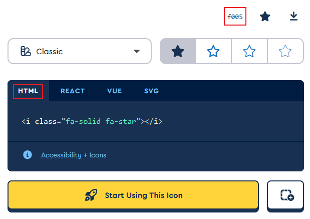

- 概述
-
.相比阿里字体图标 Iconfont，FontAwesome 功能更强大；但是字体图标的管理不如 Iconfont
.可以指定动画、旋转、颜色和尺寸，还可以下载为 SVG 格式使用，相当给力
.Fontawesome 最新版本是6。早期的4使用比较广泛
.Fontawesome 共有三个系列：Classic、Sharp 和 Brands；相应的，普通用户可以使用的只有 Classic 系列的 fa-solid 样式和 Brands 系列的fa-brands
样式；查找图标时，选择 free 即可
.使用 <i> 作为字体容器，分别指定以 fa- 开头的样式类 style class和图标名类 icon name class
- 本地使用
-
1.下载最新版的字体文件并解压
2.拷贝/webfonts 和 /css 文件夹到项目中
./webfonts：字体图标依赖
./css：免费版除了必要的核心样式文件 fontawesome.css 外，只能使用 brands 样式和 solid 样式，对应的样式文件为 brands.css 和 solid.css，其它样式文件都可以删除
<link href="/your-path-to-fontawesome/css/fontawesome.css" rel="stylesheet">
<link href="/your-path-to-fontawesome/css/brands.css" rel="stylesheet">
<link href="/your-path-to-fontawesome/css/solid.css" rel="stylesheet">
3.1基本使用：
<i class="fa-brands fa-servicestack"></i>
3.2动画：
<i class="fa-brands fa-servicestack fa-beat"></i>
3.3颜色：
<i class="fa-brands fa-servicestack" style="color: #e71352;"></i>
3.4旋转：
<i class="fa-brands fa-servicestack fa-flip-horizontal"></i>
3.5大小：
<i class="fa-brands fa-servicestack fa-xl"></i>
- 在线使用 - 字体
-
1.打开
CDN.js；也可以去 Fontawesome 官网注册账号下载工具包 kit
2.搜索 Fontawesome，分别选择核心文件和对应的版本，最新为6.40，复制 link 标签，粘贴到项目的 <head>；integrity 是完整性检查，可以删除。下例使用 solid 系列
<link rel="stylesheet" href="https://cdnjs.cloudflare.com/ajax/libs/font-awesome/6.4.0/css/fontawesome.min.css" />
<link rel="stylesheet" href="https://cdnjs.cloudflare.com/ajax/libs/font-awesome/6.4.0/css/solid.min.css" />
或者直接使用全图标版本 - all.min.css
<link rel="stylesheet" href="https://cdnjs.cloudflare.com/ajax/libs/font-awesome/6.6.0/css/all.min.css"/>
3.在 Fontawesom 官网搜索图标需要的 icon；搜索结果见下图
4.单击并复制，在项目中使用 -
<i class="fa-solid fa-star"></i>
5.添加动画 -
<i class="fa-solid fa-star fa-beat"></i>
6.其它样式使用

- 在线使用 - Unicode
-
用在伪元素中
字体编码在字体面板的右上角，见上图
.tmp::before {
content: '\f005';
font-family: fontawesome;
color: #de5096;
}